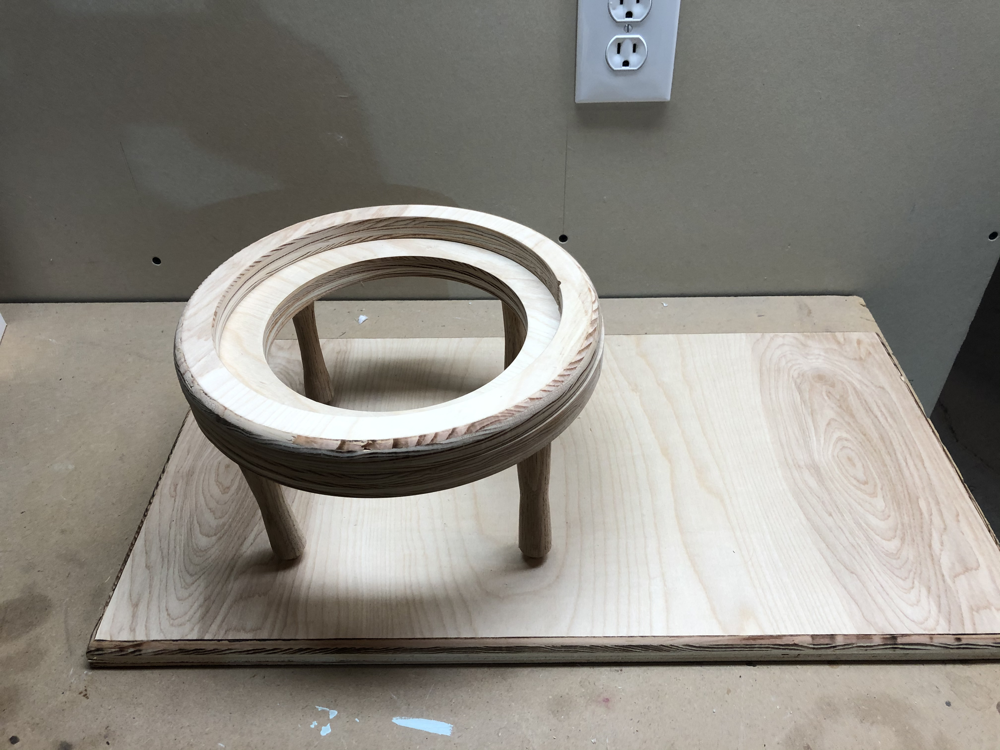

Redoing the Woodwork

Original Motor
The motor from the original IQP team was in a state of disrepair when we received it. Some of the repairs we had to make were strictly necessary in order to get the motor to a functioning state. Other repairs, however, were aesthetic. Since the motor is a demonstration tool, we felt it was important that the finished product be visually appealing. We also wanted to make the motor more durable and reliable than the previous team's motor.
Cutting the Rings
There were many things we knew we could improve on from an aesthetic standpoint. The top ring of the original IQP team's motor was constructed out of two semicircular pieces of wood. This was an aesthetic problem as well as a structural problem, as the motor was beginning to fall apart where the two semicircular pieces of wood were joined together. To improve the design, we wanted to replace these two pieces of wood with a singular ring-shaped piece of wood. However, we needed a precise inner and outer radius in order to fit the existing semicircular electromagnets we had at our disposal. For the design of the motor, we needed to create two rings to stack on top of one another, with the bottom ring having a larger diameter. This configuration creates a circular shelf for the electromagnets to sit on top of.
To accomplish this, we created a "router jig" in order to create a perfect arc with the router, which was much more precise than anything we could do by hand. We used a sacrificial particle board on top of a plank of pinewood so we could cut directly through the pinewood without damaging the workbench.
We learned that moving the router slowly was important to creating a smooth finish on the edge of the wood. With the router jig, we were able to use the same process for the inner and outer circumfrences.
To improve on the aesthetics of the original IQP motor, we wanted to round the edges of the rings we cut. We did this by changing the drillbit on the router we used to create the ring shapes. We were very happy with the results!